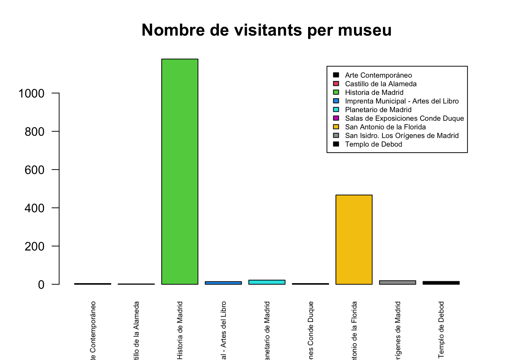
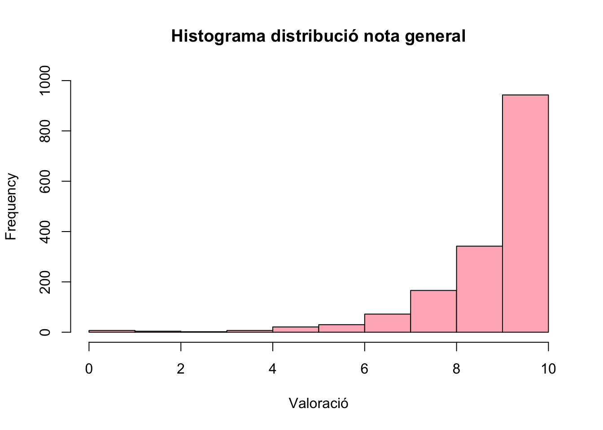
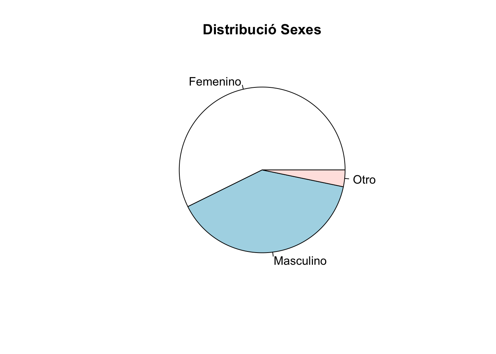
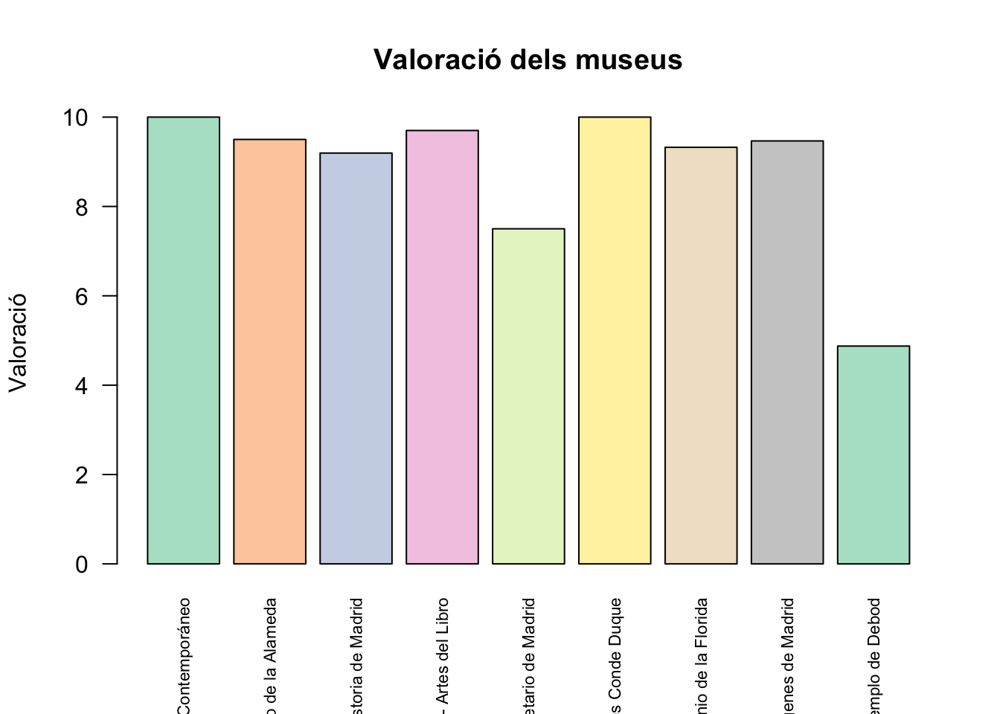

[1] "status"
[2] "device_type"
[3] "1_¿Qué museo acabas de visitar?"
[4] "2_La recepción y atención al público"
[5] "3_La información: paneles, folletos, cartelas ..."
[6] "4_El confort, el orden y la limpieza en la visita"
[7] "5_La adaptación a visitantes con discapacidad"
[8] "6_Teniendo en cuenta toda su experiencia, ¿cuál es su valoración global con la visita en una escala de 0 a 10, siendo “0”, totalmente insatisfactoria y “10”, totalmente satisfactoria"
[9] "7_Nos encantaría recibir sus observaciones, comentarios o recomendaciones para ayudarnos a mejorar el servicio"
[10] "8_¿Cuál es su grupo de edad?"
[11] "9_¿Cuál es su sexo?" Pràctica 1
Pràctica 1
Primer especificam totes les llibreries necessàries pel futur, llegim el data frame en format xlsx a vegades de csv, ja que el format d’aquest últim té molts errors de format.
A més aquí definirem algunes funcions que usarem posteriorment.
(Abans d’això hauriem de posar cada variable en la forma que toca com ‘character’ o ‘numeric’. Eliminam identificació i dates i a més el survey_id és igual a tot.)
Eliminarem la identificació de cada enquestat per mantenir l’anonimat i les dues variables posteriors, ja que no aporten informació. La variable “Survey_Id” la podem eliminar també, ja que només existeix un valor.
Ara a l’haver eliminat dades innecessàries podem veure com totes les variables estan definides com a caràcter, algunes hauran de ser del tipus “numeric” per tal de poder fer càlculs amb els valors.
Abans de començar a tractar la informació del data frame, primer mirem quins elements es tenen en compte en aquest estudi.
La informació més important del data frame és la distribució de participants a través dels museus, veurem quin dels museus és el més frecuent i quin el que menys. En l’enquesta que esteim estudiant existeixen 1728 enquestats i 11 variables en total.
(Tractament plantilla per dades de caracter com el nom del museu, podem canviar el tipus de presentació com un violi)
Arte Contemporáneo Castillo de la Alameda
4 2
Historia de Madrid Imprenta Municipal - Artes del Libro
1178 14
Planetario de Madrid Salas de Exposiciones Conde Duque
22 4
San Antonio de la Florida San Isidro. Los Orígenes de Madrid
467 19
Templo de Debod
15
Arte Contemporáneo Castillo de la Alameda
0.002318841 0.001159420
Historia de Madrid Imprenta Municipal - Artes del Libro
0.682898551 0.008115942
Planetario de Madrid Salas de Exposiciones Conde Duque
0.012753623 0.002318841
San Antonio de la Florida San Isidro. Los Orígenes de Madrid
0.270724638 0.011014493
Templo de Debod
0.008695652 A través d’aquesta taula podem apreciar que un 95% dels visitants provenen del museu “Història de Madrid” o “San Antonio de la Florida” amb 1178 i 467 enquestats respectivament. Amb aquesta total dominació, els grafs perden tot el valor representatiu, podem notar que qui té menys enquestats és ” Castillo de Alameda” amb un 0.1% amb 2 enquestats.
(Tractament per dades ordinals com les valoracions amb un histograma)
De les variables numèriques com valoracions, es a dir, de la pregunta 2 fins la 6 ens centrarem en l’estudi de la última, ja que totes les anteriors tenen resultats similars.
Abans de l’estudi exploratori de la pregunta 6 és interesant notar com la pregunta 5, que tracta l’adaptació a Mitjançant aquesta taula podem apreciar que un 95% dels visitants provenen del museu “Història de Madrid” o “San Antonio de la Florida” amb 1178 i 467 enquestats respectivament. Amb aquesta total dominació, els grafs perden tot el valor representatiu, podem notar que qui té menys enquestats és ” Castillo de Alameda” amb un 0.1% amb 2 enquestats.
Per ilustrar millor aquesta informació introduïrem un gràfic amb els museus i la quantitat de gent que ha anat a visitar cada un.

D’aquesta manera, només fent un ràpid colp d’ull al gràfic ja podem intuïr els resultats numèrics que hem obtingut abans.
(Tractament per dades ordinals com les valoracions amb un histograma)
De les variables numèriques com valoracions, es a dir, de la pregunta 2 fins la 6 ens centrarem en l’estudi de la última, ja que totes les anteriors tenen resultats similars.
Abans de l’estudi exploratori de la pregunta 6 és interesant notar com la pregunta 5, que tracta l’adaptació a la discapacitat, té molts més enquestats que han decidit no contestar-la amb un total de 332, on per exemple la pregunta 2 te només uns 59.
[1] 59[1] 332variable_5
0 1 10 2 3 4 5 6 7 8 9
3 3 877 5 4 8 27 17 81 161 210 variable_5
0 1 10 2 3 4
0.002148997 0.002148997 0.628223496 0.003581662 0.002865330 0.005730659
5 6 7 8 9
0.019340974 0.012177650 0.058022923 0.115329513 0.150429799 
Podem notar que la moda seria donar un 10 a la pregunta, al tenir un 62% de probabilitat també serà la media, a més podem calcular facilment la mitjana la qual dona un valor de 9.175
[1] 9.175501Una dada típica d’enquestes seria el sexe de l’enquestat, amb un estudi superficial podem fácilment veure que el gènere femení manté la dominancia amb un 57.3% de pressència, el sexe masculí amb un 39.4% en segon lloc i finalment “Otro” amb un 3.2%.

Vegem ara quina es la proporcio d’edat dels visitants del museu.
A continuació, una pregunta que es podem demanar és si existeix alguna relació entre el grup d’edat al que hi pertanyen els visitants i els museus que visiten aquests grups.
Fisher's Exact Test for Count Data with simulated p-value (based on
2000 replicates)
data: taula_museus_edat
p-value = 0.0004998
alternative hypothesis: two.sidedCom hem obtingut un p-valor molt petit (0.0005) haurem de rebutjar la hipòtesi de què les variables són independents, llavors les edats i els museus poden guardar algun tipus de ralció. Ara bé, aquestes dades estan subjectes a què la frqüència de visita als museus difereix molt d’uns a altres, llavors pot influenciar prou en aquest estudi.
Un altre dupte que ens pot sortir al tractar amb un servei, en aquest cas el que oferixen els museus, és la valoració mitjana de cada un d’ells, per així tenir en compte aquesta informació per triar quin museu visitar. Aleshores, calcularem la puntuació mitjana de cada un.
0 1 2 3 4 5 6 7 8 9
Arte Contemporáneo 0 0 0 0 0 0 0 0 0 0
Castillo de la Alameda 0 0 0 0 0 0 0 0 0 1
Historia de Madrid 2 1 3 2 6 12 20 48 117 259
Imprenta Municipal - Artes del Libro 0 0 0 0 0 0 0 1 0 0
Planetario de Madrid 0 0 1 0 0 1 2 1 5 1
Salas de Exposiciones Conde Duque 0 0 0 0 0 0 0 0 0 0
San Antonio de la Florida 1 0 0 0 1 6 8 22 42 75
San Isidro. Los Orígenes de Madrid 0 0 0 0 0 0 0 0 2 4
Templo de Debod 2 1 0 0 0 2 0 0 0 2
10
Arte Contemporáneo 3
Castillo de la Alameda 1
Historia de Madrid 623
Imprenta Municipal - Artes del Libro 9
Planetario de Madrid 3
Salas de Exposiciones Conde Duque 1
San Antonio de la Florida 293
San Isidro. Los Orígenes de Madrid 9
Templo de Debod 1[1] 10.000000 9.500000 9.194876 9.700000 7.500000 10.000000 9.323661
[8] 9.466667 4.875000 Museu Mitjana
1 Arte Contemporáneo 10.000000
2 Castillo de la Alameda 9.500000
3 Historia de Madrid 9.194876
4 Imprenta Municipal - Artes del Libro 9.700000
5 Planetario de Madrid 7.500000
6 Salas de Exposiciones Conde Duque 10.000000
7 San Antonio de la Florida 9.323661
8 San Isidro. Los Orígenes de Madrid 9.466667
9 Templo de Debod 4.875000Per fer aquesta informació més visual farem un gràfic amb les puntiacions mitjanes que ha obtingut cada museu.
# Crear el barplot
barplot(
taula_mitjana$Mitjana,
names.arg = taula_mitjana$Museu,
las = 2,
col = palette("Pastel 2"),
main = "Valoració dels museus",
ylab = "Valoració",
cex.names = 0.7
)